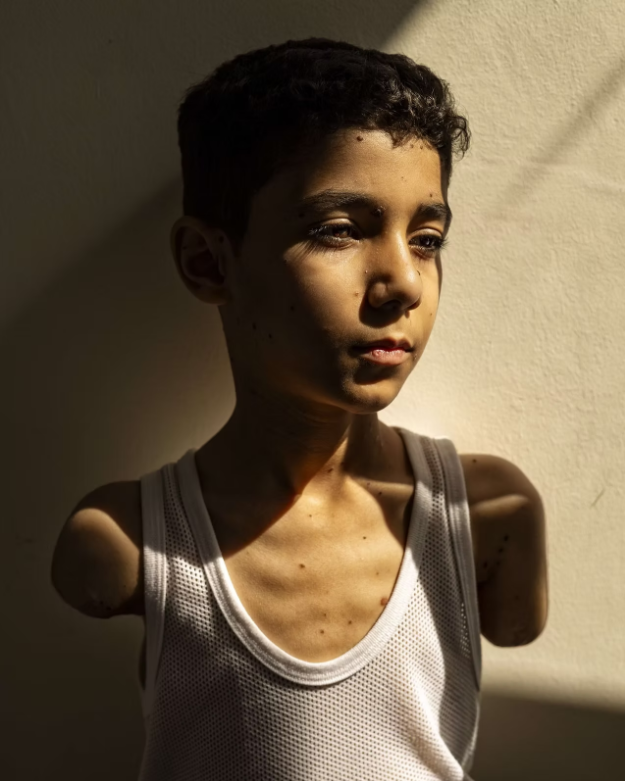
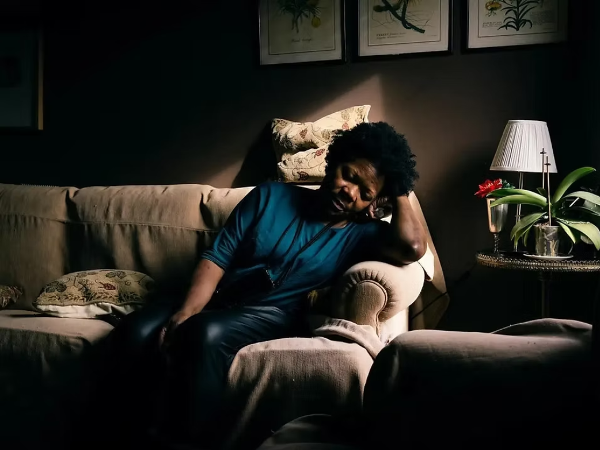

World Press Photo do Ano 2025 retrata o conflito na Palestina
A imagem de uma criança palestiniana que perdeu ambos os braços num ataque israelita em Gaza venceu o prémio World Press Photo do Ano 2025. A fotografia é da autoria de Samar Abu Elouf e retrata o impacto humano do conflito na Palestina.
Por Joana Araújo Cardoso

Mahmoud Ajjour, da autoria de Samar Abu Elouf | World Press PhotoMahmoud Ajjour perdeu ambos os braços após um ataque de Israel em Gaza, em março de 2024. O rapaz de nove anos recebeu tratamento médico no Catar, onde a fotografia foi capturada, a 28 de junho desse ano.
Na história anexada à fotografia, lê-se: “Enquanto a sua família fugia de um ataque israelita, Mahmoud voltou atrás para encorajar os outros a seguirem em frente. Uma explosão decepou um dos seus braços e mutilou o outro”. A família fugiu para o Catar, onde uma equipa médica acabou por amputar o braço ferido do rapaz.
Desde então, Mahmoud Ajjour aprendeu a usar os pés para realizar algumas atividades, mas continua a precisar de ajuda para grande parte das atividades diárias, como comer e vestir-se. O jovem expressa o desejo de ter braços prostéticos e “viver a sua vida como qualquer outra criança”.
A fotógrafa, Samar Abu Elouf, é originária de Gaza e abandonou a cidade em dezembro de 2023. Atualmente, vive no mesmo edifício de Mahmoud Ajjour, no Catar, onde se relacionou com as pessoas e documentou alguns dos feridos graves que fugiram de Gaza.
A imagem premiada concorreu na categoria “Singles” da região da Ásia Ocidental, Central e Meridional. Também a concorrer para foto do ano, as outras finalistas foram “Night Crossing” de John Moore (EUA) e “Droughts in the Amazon” de Musuk Nolte (Peru/México).
Como funciona o concurso
Atualmente, a World Press Photo divide a competição em seis regiões globais (África; Ásia-Pacífico e Oceânia; Europa; América do Norte do Centro; América do Sul; Ásia Ocidental, Central e Meridional) e avalia por categoria, selecionando uma foto vencedora em cada. As categorias são “Singles” (fotografias singulares, elegíveis para o prémio World Press Photo do Ano), “Stories” (conjunto de 4 a 10 imagens que conta uma narrativa) e “Long-Term Projects” (projetos de 24 a 30 fotos sobre um único tema).
Na zona da Europa, a fotógrafa portuguesa Maria Abranches venceu na categoria “Stories” com o projeto “MARIA”. O conjunto de 10 fotos conta a história de Ana Maria Jeremias, cuidadora doméstica há mais de 40 anos, que foi traficada de Angola para Portugal quando tinha 9 anos de idade.

Ana Maria Jeremias no projeto "MARIA", da autoria de Maria Abranches | ExpressoNa região Norte de Portugal, é possível ver estas e outras fotografias da World Press Photo em exposição no Fórum da Maia, de 13 de novembro a 3 de dezembro.
Para o concurso de 2026, o período de submissões encontra-se aberto entre 1 de dezembro de 2025 e 17 de janeiro de 2026. Os resultados serão revelados a 9 de abril de 2026 e a próxima World Press Photo do Ano será anunciada a 23 de abril de 2026.